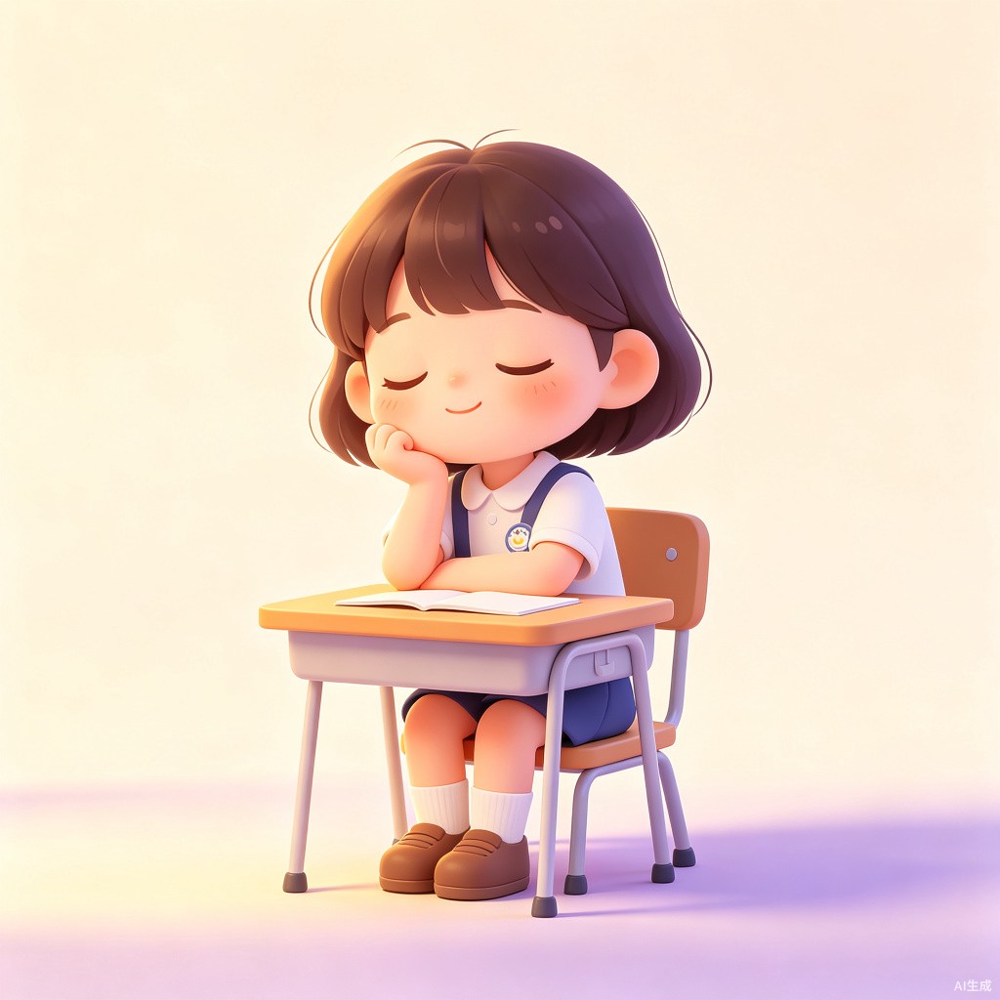

到点就发呆，灵感不逃跑 — 守护小学生想象力的智能伙伴
核心创意：一个到点提醒家长，让小学生得以抽离学习、发呆空想一会儿，再把想到的天马行空的点子搜集记录下来的小程序。
想解决什么问题？
现在的小学生被课程、作业、辅导班排得满满当当，大脑几乎没有"放空"的时间。科学研究表明，发呆和空想恰恰是创造力萌发的重要时刻 — 但很多孩子的灵感火花还没来得及捕捉，就消散在忙碌中了。
为什么想做这个？
我自己就是从"发呆"中收获了很多奇思妙想的人。小时候那些在课堂上走神时冒出来的点子，有的成了我后来写作的素材，有的启发我做出了小发明。我希望今天的小朋友也能有一个"被允许发呆"的时刻，而不是被一直推着往前走。
这是什么样的产品？
「发呆星球」是一款面向小学生家长和孩子共创的轻量级小程序。它像一个小小的时间管家，每天定时发出温柔的提醒，告诉孩子："该发呆了！"同时引导家长给孩子留出这段宝贵的留白时间。发呆结束后，孩子可以用语音或画笔快速记录下刚才的奇思妙想，所有灵感都会被保存在专属的"星球日记"里。
点击下方按钮，亲身体验「发呆星球」的使用流程

累了困了不妨发发呆，让想象力无限畅游
选择一个类别，再写下你的想法
💡 选择类别后写下想法，点击保存
「发呆星球」不是要让孩子"偷懒"，而是给忙碌的童年留一扇通往想象力的小窗。
在这里，发呆被允许，灵感被珍视，每一个天马行空的想法都值得被记录。